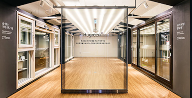
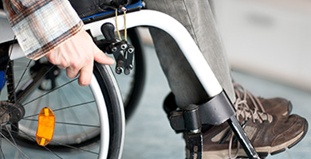
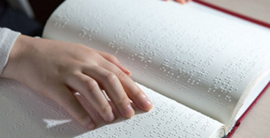
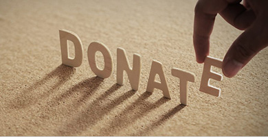
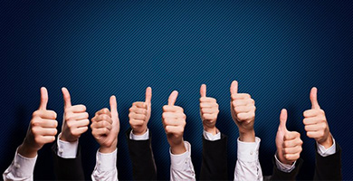
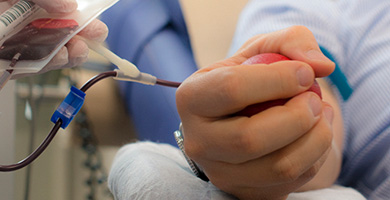
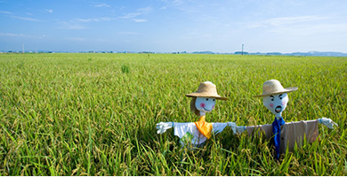
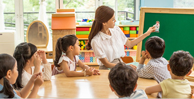
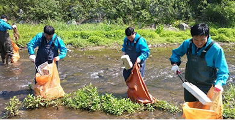

home > 상생경영 > 사회공헌
사회공헌
더불어 살아가는 세상을 위한 상생의 사회공헌에 앞장서는 기업이 되겠습니다.
사회공헌 소개
기업의 사회적 역할에 대한 인식변화와 함께 금호석유화학의 사회공헌활동도 단순 한 물품지원에서 참여와 나눔의 형태로, 소극적인 기부에서 적극적인 상생의 형태로 발전해왔습니다. 정기적으로 CEO 주관의 사회공헌활동을 기획·전개하는 한편, 임직 원들의 자발적인 사회봉사활동 참여 장려를 위하여 봉사자에 대한 지원과 체계적인 관리, 포상 등을 제도화 하였습니다. 금호석유화학 임직원은 형식적활동, 현물전달위주에서 벗어나 참여형의 진정성 있는 봉사를 추구합니다.
중점추진사업
-

- 사회복지시설 휴그린 창호지원
- 친환경 건축자재 브랜드 ‘휴그린’ 제품을 활용하여 2008년부터 장애인생활시설을 대상으로 창호시공 및 시설보강 공사를 지원 하고, 시설의 열악한 주거환경을 개선하기 위해 노력해 왔습니 다. 유해 중금속이 함유되어 있지 않고 화재시 유독가스를 발생 시키지 않는 친환경 휴그린 ABS창호를 이용하여 기존의 결로, 단열, 안전 등의 문제를 해결함으로써 시설에 거주하는 장애인 및 관계자들에게 쾌적한 친환경 주거환경을 제공하고 있습니다.
-

- 중증장애인을 위한 맞춤형 보장구 지원
- 매년 서울특별시장애인복지시설협회로부터 추천받은 장애인 시설을 대상으로 중증장애인 개개인의 체형에 맞는 맞춤형 이 너 휠체어 등의 보장구를 지원하고, 장애인들의 일상생활에 도 움을 주기 위해 노력하고 있습니다. 안전성과 더불어 자세 교정 효과까지 기대할 수 있어 장애인들이 좀더 친근하고 자유롭게 세상을 만나는 데 큰 힘이 되고 있습니다..
-

- 시각장애인용 보장구 지원
- 친환경 건축자재 브랜드 ‘휴그린’ 제품을 활용하여 2008년부터 장애인생활시설을 대상으로 창호시공 및 시설보강 공사를 지원 하고, 시설의 열악한 주거환경을 개선하기 위해 노력해 왔습니 다. 유해 중금속이 함유되어 있지 않고 화재시 유독가스를 발생 시키지 않는 친환경 휴그린 ABS창호를 이용하여 기존의 결로, 단열, 안전 등의 문제를 해결함으로써 시설에 거주하는 장애인 및 관계자들에게 쾌적한 친환경 주거환경을 제공하고 있습니 다.
-

- 임직원 끝전/정액 모금 및 매칭 그랜트 성금 기부
- 임직원 급여의 천원 미만 끝전과 일정 금액의 정액 기부 금을 모아 매칭 그랜트(Matching Grant)를 실시하여 소 외된 이웃을 위한 성금으로 전달하고 있습니다.
-

- 자율형 임직원 봉사활동
- 회사 차원에서 진행하는 사회공헌활동 외에도 임직원들이 사 회복지기관과 연계하여 상시적으로 봉사활동에 참여할 수 있 도록 임직원 봉사활동을 적극 장려하고 있습니다. 봉사활동에 대한 지원과 체계적인 관리를 통하여 독거노인 도시락 배달, 독 거노인 이동목욕 봉사, 장애인 외출 프로그램 지원, 노숙자 및 독거노인 무료급식 지원, 영아일시보호소 아기돌봄이 활동, 사랑의 연탄 배달 등 다양한 봉사활동에 임직원 전원이 자발적 으로 참여하고 있습니다.
-

- 사랑의 헌혈 캠페인
- 매년 연1회 이상 전사업장 단체헌혈을 실시하고, 백혈병 어린이 등 투병으로 혈액을 필요로 하는 이들을 위하여 단체헌혈을 통해 모은 헌혈증을 유관기관에 기증해 오고 있습니다.
-

- 1사 1촌 결연을 통한 농촌 지원
- 농산물 직거래 장터, 설·추석 맞이 농산물 구입 지원을 통하여 농촌 경제 활성화에 기여하기 위해 노력하고 있습니다. 이 외에 도 어버이날 효도잔치 후원, 농번기 일손돕기 봉사활동 등 결연 을 맺은 마을과 활발한 교류를 추진하고 있습니다.
-

- 1사 1교 결연을 통한 인재 양성
- 1사 1교 결연을 통한 장학금 지원 및 지역 학교법인 후원 등 미 래 인재 육성을 위한 노력을 기울이고 있습니다.
-

- 1사 1산, 1사 1하천 가꾸기 등의 환경정화활동
- 문수산/산호섬 정기 환경정화활동 등 1사 1산 및 1사 1하천 가꾸기, 여수 연안 치어 방류 행사 등 인류와 환경이 공존하는 녹색화학을 실천하기 위한 다양한 활동을 전개하고 있습니다.